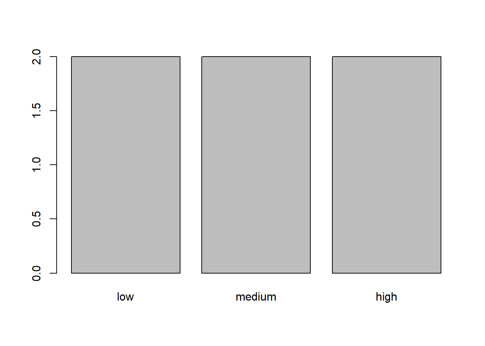

Understanding data structures is crucial because they determine how we can interact with our data. Different structures are suited for different tasks, and knowing which to use can make your code more efficient and easier to read.
Creating and Manipulating Vectors
Vectors are a fundamental data structure in R, consisting of elements of the same type. They can hold numeric, character, or logical data.
Creating Vectors
Vectors can be created using the c() function or specific functions like seq() and rep().
Code
# Using c() functioncharacters <-c("Iron Man", "Superman", "Wonder Woman", "Batman", "Hulk")# Using : operator for sequencesnumbers <-1:5# Using seq() functioneven_numbers <-seq(2, 10, by=2)# Using rep() functionrepeated_hero <-rep("Spider-Man", times=3)print(characters)print(numbers)print(even_numbers)print(repeated_hero)
Note
The c() function is versatile and can create vectors of any type. The : operator is a quick way to create integer sequences. seq() offers more control over sequences, and rep() is useful for creating vectors with repeated elements.
Vector Operations
Vectors allow various operations, such as indexing and logical operations:
The byrow = TRUE argument fills the matrix by rows. If omitted, it fills by columns.
Matrix Operations
Matrices support a variety of operations:
Code
# Element-wise additionboosted_stats <- hero_stats +5print(boosted_stats)# Matrix multiplicationscaled_stats <- hero_stats %*%diag(5)print(scaled_stats)# Transposetransposed_stats <-t(hero_stats)print(transposed_stats)# Accessing elementsprint(hero_stats[1, 3]) # Strength of Wonder Womanprint(hero_stats[, "Batman"]) # All stats for Batman
Important
Exercise 2: Matrix Manipulation
Create a 3x3 matrix of hero power levels (strength, speed, intelligence) for three new heroes.
Calculate the average power level for each hero.
Find which hero has the highest strength.
Scale all power levels by 1.5 and round to the nearest integer.
Introduction to Data Frames
Data frames are used to store tabular data and can contain columns of different types. This data type is very common for data management and analysis operations.
Creating Data Frames
Use the data.frame() function to create data frames. Each column can have a different type.
Code
# Create a data framehero_df <-data.frame(Name = characters,Strength = strengths,Intelligence =c(70, 95, 90, 85, 75),IsMarvel =c(TRUE, FALSE, FALSE, FALSE, TRUE))print(hero_df)
Data Frame Operations
Data frames support various operations, including accessing, modifying, and summarizing data.
Code
# Adding a new columnhero_df$Speed <-c(85, 100, 90, 75, 70)# Accessing columnsprint(hero_df$Name)print(hero_df[["Strength"]])# Filtering rowsmarvel_heroes <- hero_df[hero_df$IsMarvel, ]print(marvel_heroes)# Using subset()strong_heroes <-subset(hero_df, Strength >85)print(strong_heroes)# Sortingsorted_heroes <- hero_df[order(hero_df$Intelligence, decreasing =TRUE), ]print(sorted_heroes)
Note
Data frames combine the best of both worlds: they can store different types of data (like lists) but in a tabular format (like matrices).
Important
Exercise 3: Data Frame Manipulation
Add a “PowerLevel” column that’s the average of Strength, Intelligence, and Speed.
Filter the data frame to show only heroes with a PowerLevel above 85.
Sort the heroes by PowerLevel in descending order.
Create a new data frame with only the Name and PowerLevel columns for non-Marvel heroes.
Final Exercise: Create a comprehensive hero database:
Make a data frame with at least 10 heroes, including columns for Name, Type (factor), Strength, Intelligence, and Speed.
Add a PowerLevel column as before.
Create a list for each hero with their stats and a vector of their superpowers.
Use this data to answer questions like:
Who is the strongest hero of each type?
What’s the average PowerLevel by hero type?
Which hero has the most superpowers?
This exercise will test your ability to work with multiple data structures and perform various operations on them.
In R, data can be stored in various forms, each suitable for different types of analysis and operations. Understanding these data object types is fundamental to effectively utilizing R for data manipulation, statistical analysis, and programming.
This chapter introduces you to the essential data object types in R, providing a foundation for more advanced topics. We will cover the following:
Numeric Single Value (Scalar): A single numeric value, such as an integer or a floating-point number. Scalars are the building blocks of more complex data structures.
Character Single Value: A single character string, which can be used to store text data. Character values are often combined into vectors or used as labels in data frames and factors.
Vector: A sequence of elements of the same type, such as a series of numbers or a collection of character strings. Vectors are one of the most commonly used data structures in R.
Factor: A special type of vector used to represent categorical data. Factors are useful for storing data that takes on a limited number of discrete values, such as gender or education level.
Matrix: A two-dimensional array where each element is of the same type. Matrices are essential for mathematical operations and are often used in linear algebra.
Array: A multi-dimensional generalization of a matrix, allowing for data storage in more than two dimensions. Arrays are useful for complex data representations in fields like image processing and scientific computing.
List: A flexible data structure that can hold elements of different types, including vectors, matrices, and even other lists. Lists are powerful tools for managing diverse data within a single object.
Data Frame: A table-like structure where each column can contain different types of data. Data frames are central to data analysis in R, allowing for organized storage and manipulation of datasets.
Text Data Objects (e.g., dfm): Text data is increasingly important in social sciences and humanities. In R, specialized data structures such as Document-Feature Matrices (dfm) allow for the handling and analysis of text data. These structures enable tasks like text mining, sentiment analysis, and natural language processing.
Each of these data object types serves a unique purpose and has specific operations associated with it. Throughout this chapter, we will explore how to create, manipulate, and apply these data structures in real-world scenarios, equipping you with the skills needed to manage diverse data types in your research.
1. Numeric Single Value (Scalar)
A scalar in R represents a single numeric value, such as an integer or a floating-point number.
Code
# Creating a numeric scalarnumeric_scalar <-42numeric_scalar
[1] 42
2. Character Single Value
A character single value in R is used to store text or strings.
Code
# Creating a character scalarcharacter_scalar <-"Hello, R!"character_scalar
[1] "Hello, R!"
3. Vector
A vector is a sequence of elements of the same type, commonly used for storing a series of numbers or character strings.
Code
# Creating a numeric vectornumeric_vector <-c(1, 2, 3, 4, 5)numeric_vector
[1] 1 2 3 4 5
Code
# Creating a character vectorcharacter_vector <-c("apple", "banana", "cherry")character_vector
[1] "apple" "banana" "cherry"
4. Factor
A factor is a special type of vector used to represent categorical data.
Code
# Creating a factorfruit <-c("apple", "banana", "apple", "cherry", "banana")factor_fruit <-factor(fruit)factor_fruit
[1] apple banana apple cherry banana
Levels: apple banana cherry
5. Matrix
A matrix is a two-dimensional array where each element is of the same type.
Code
# Creating a matrixmatrix_data <-matrix(1:9, nrow =3, ncol =3)matrix_data
[,1] [,2] [,3]
[1,] 1 4 7
[2,] 2 5 8
[3,] 3 6 9
6. Array
An array is a multi-dimensional generalization of a matrix.
Code
# Creating a 3-dimensional arrayarray_data <-array(1:12, dim =c(2, 3, 2))array_data
A data frame is a table-like structure where each column can contain different types of data.
Code
# Creating a data framedata_frame <-data.frame(ID =1:3,Name =c("Alice", "Bob", "Charlie"),Score =c(85, 92, 88))data_frame
ID Name Score
1 1 Alice 85
2 2 Bob 92
3 3 Charlie 88
9. Text Data Objects (e.g., dfm)
Text data is increasingly important in social sciences and humanities. In R, specialized data structures like Document-Feature Matrices (dfm) are used for text analysis.
Code
# Example using the quanteda package to create a dfm# Install the quanteda package if not already installed# install.packages("quanteda")library(quanteda)
See https://quanteda.io for tutorials and examples.
Code
# Sample text datatexts <-c("This is a sample text", "Text analysis with R", "Learning R is fun")# Creating a corpuscorpus <-dfm(tokens(texts))# Creating a Document-Feature Matrix (dfm)dfm_data <-dfm(corpus)dfm_data
Document-feature matrix of: 3 documents, 10 features (56.67% sparse) and 0 docvars.
features
docs this is a sample text analysis with r learning fun
text1 1 1 1 1 1 0 0 0 0 0
text2 0 0 0 0 1 1 1 1 0 0
text3 0 1 0 0 0 0 0 1 1 1
10. Classes
Classes are one of the core concepts in Object Oriented Programming. They act as structured containers which can hold different types of information. There are 3 class systems used by R.
S3 Classes
The S3 class is the most common class in R and is unstructured.
Code
#List of componentsstudent1 <-list(name ="Alice", age ="21", score ="85")#Naming the classclass(student1) <-"Student_Info"#call the objectstudent1
The S4 is a more advanced version of S3 and uses a more formal definition of the object.
Code
library(methods)# create a class "student" with three member variablessetClass("student", slots =list(name ="character", age ="numeric", score ="numeric"))# create an object of classstudent2 <-new("student", name ="Bob", age =20, score =90)# access name slot of student2student2@name
[1] "Bob"
Code
# Create a method for the objectsetMethod("show", "student", function(object){cat("The name of the student is ", object@name, ".\n")cat("They are", object@age, "years old. \n")cat("Their score is:", object@score)})# call the objectstudent2
The name of the student is Bob .
They are 20 years old.
Their score is: 90
Reference Class
This class is more similar to other programming languages and while it looks like a S4 class it uses `setRefClass()’ instead.
Code
# create a class "student" with three member variablessetRefClass("student_Info", fields =list(name ="character", age ="numeric", score ="numeric"))# create an object of classstudentList <-new("student", name ="Charlie", age =22, score =92)studentList
The name of the student is Charlie .
They are 22 years old.
Their score is: 92
S3 Class
S4 Class
Reference Class
Lacks formal definition
Class defined using setClass()
Class defined using setRefClass()
Objects are created by setting the class attribute
Objects are created using new()
Objects are created using generator functions
Attributes are accessed using $
Attributes are accessed using @
Attributes are accessed using $
Methods belong to generic function
Methods belong to generic function
Methods belong to the class
Follows copy-on-modify semantics
Follows copy-on-modify semantics
Does not follow copy-on-modify semantics
Exercise 1: Creating and Manipulating Vectors
Objective: Start creating and manipulating vectors in R.
Instructions:
Create a numeric vector containing the numbers 10, 20, 30, 40, and 50.
Create a character vector containing the names “Alice”, “Bob”, “Charlie”, “David”, and “Eve”.
Use indexing to retrieve the third element from each of these vectors.
Modify the second element in the numeric vector to be 25.
Calculate the sum of all elements in the numeric vector.
Expected Output:
Numeric vector: c(10, 25, 30, 40, 50)
Character vector: c("Alice", "Bob", "Charlie", "David", "Eve")
Sum of the numeric vector: 155
Code
# Create numeric and character vectorsnumeric_vector <-c(10, 20, 30, 40, 50)character_vector <-c("Alice", "Bob", "Charlie", "David", "Eve")# Retrieve the third elementnumeric_vector[3]
[1] 30
Code
character_vector[3]
[1] "Charlie"
Code
# Modify the second elementnumeric_vector[2] <-25# Calculate the sum of all elementssum(numeric_vector)
[1] 155
Code
# Try renaming the objects?
Exercise 2: Working with Factors
Objective: Understand how to create and manipulate factors in R.
Instructions:
Create a factor variable from the following vector: c("low", "medium", "high", "low", "medium", "high").
Display the levels of the factor variable.
Convert the factor levels to an ordered factor where “low” < “medium” < “high”.
Create a bar plot to visualize the frequency of each level.
Expected Output:
Levels: c("low", "medium", "high")
Ordered factor levels: low < medium < high
R Code:
Code
# Create a factor variablefactor_variable <-factor(c("low", "medium", "high", "low", "medium", "high"))# Display the levelslevels(factor_variable)
[1] "high" "low" "medium"
Code
# Convert to an ordered factorordered_factor <-factor(factor_variable, levels =c("low", "medium", "high"), ordered =TRUE)# Create a bar plotbarplot(table(ordered_factor))

Exercise 3: Data Frame Operations
Objective: Learn how to create, access, and manipulate data frames.
Instructions:
Create a data frame with the following columns: ID (1, 2, 3), Name (“Alice”, “Bob”, “Charlie”), and Score (85, 90, 88).
Access the Name column and print it.
Add a new column Pass that indicates whether the Score is greater than or equal to 90.
Calculate the average Score for all students.
Expected Output:
Data frame with a new Pass column
Average score: 87.67
R Code:
Code
# Create a data framedata_frame <-data.frame(ID =1:3,Name =c("Alice", "Bob", "Charlie"),Score =c(85, 90, 88))# Access the Name columndata_frame$Name
[1] "Alice" "Bob" "Charlie"
Code
# Add a new columndata_frame$Pass <- data_frame$Score >=90# Calculate the average scoremean(data_frame$Score)
[1] 87.66667
Exercise 4: Text Data Manipulation with stringr
Objective: Practice manipulating text data using the stringr package.
Instructions:
Load the stringr package.
Create a character string: "The quick brown fox jumps over the lazy dog".
Count the number of words in the string.
Extract the word “quick” from the string.
Replace the word “lazy” with “energetic”.
Expected Output:
Number of words: 9
Extracted word: "quick"
Modified string: "The quick brown fox jumps over the energetic dog"
R Code:
Code
# Load the stringr packagelibrary(stringr)
Attaching package: 'stringr'
The following object is masked _by_ '.GlobalEnv':
fruit
Code
# Create a character stringtext_string <-"The quick brown fox jumps over the lazy dog"# Count the number of wordsstr_count(text_string, "\\w+")
[1] 9
Code
# Extract the word "quick"str_extract(text_string, "quick")
[1] "quick"
Code
# Replace "lazy" with "crazy"str_replace(text_string, "lazy", "crazy")
[1] "The quick brown fox jumps over the crazy dog"
Code
# Try the following and count again?# text_string <- "The quick brown fox jumps over the lazy dog #"
Exercise 5: Creating and Analyzing a Document-Term Matrix (DTM)
Objective: Learn how to create and analyze a Document-Term Matrix using text data.
Instructions:
Load the tm package.
Create a small corpus using the following text documents:
“R is a programming language for data analysis.”
“Data analysis in R is powerful and flexible.”
“Learning R can be fun and rewarding.”
Create a Document-Term Matrix (DTM) from the corpus.
Inspect the DTM to see the term frequency matrix.
Identify the term with the highest frequency across all documents.
Expected Output:
A DTM with term frequencies
The term with the highest frequency (e.g., “R”)
R Code:
Code
# Load the tm packagelibrary(tm)
Loading required package: NLP
Attaching package: 'NLP'
The following objects are masked from 'package:quanteda':
meta, meta<-
Attaching package: 'tm'
The following object is masked from 'package:quanteda':
stopwords
Code
# Create a corpusdocs <-c("R is a programming language for data analysis.","Data analysis in R is powerful and flexible.","Learning R can be fun and rewarding.")corpus <-Corpus(VectorSource(docs))# Create a Document-Term Matrixdtm <-DocumentTermMatrix(corpus)# Inspect the DTMinspect(dtm)
<<DocumentTermMatrix (documents: 3, terms: 13)>>
Non-/sparse entries: 15/24
Sparsity : 62%
Maximal term length: 11
Weighting : term frequency (tf)
Sample :
Terms
Docs analysis analysis. and can data flexible. for language powerful
1 0 1 0 0 1 0 1 1 0
2 1 0 1 0 1 1 0 0 1
3 0 0 1 1 0 0 0 0 0
Terms
Docs programming
1 1
2 0
3 0
Code
# Find the term with the highest frequencyterm_frequencies <-colSums(as.matrix(dtm))most_frequent_term <-names(term_frequencies[which.max(term_frequencies)])most_frequent_term
---title: "EPPS Math Coding Camp"subtitle: "Data Structures"author: "Brennan Stout"date: "August 5, 2025"format: html: toc: true toc-depth: 3 code-fold: show code-tools: true highlight-style: github---# Data Structures in R::: callout-tip## Why Data Structures MatterUnderstanding data structures is crucial because they determine how we can interact with our data. Different structures are suited for different tasks, and knowing which to use can make your code more efficient and easier to read.:::## Creating and Manipulating VectorsVectors are a fundamental data structure in R, consisting of elements of the same type. They can hold numeric, character, or logical data.### Creating VectorsVectors can be created using the `c()` function or specific functions like `seq()` and `rep()`.```{r}#| warning: false#| output: false# Using c() functioncharacters <-c("Iron Man", "Superman", "Wonder Woman", "Batman", "Hulk")# Using : operator for sequencesnumbers <-1:5# Using seq() functioneven_numbers <-seq(2, 10, by=2)# Using rep() functionrepeated_hero <-rep("Spider-Man", times=3)print(characters)print(numbers)print(even_numbers)print(repeated_hero)```::: callout-noteThe c() function is versatile and can create vectors of any type. The : operator is a quick way to create integer sequences. seq() offers more control over sequences, and rep() is useful for creating vectors with repeated elements.:::### Vector OperationsVectors allow various operations, such as indexing and logical operations:```{r}#| warning: false#| output: false# Arithmetic operationsstrengths <-c(90, 95, 85, 80, 88)boosted_strengths <- strengths +5print(boosted_strengths)# Logical operationsis_strong <- strengths >85print(is_strong)# Indexingprint(characters[2]) # Access second elementprint(characters[c(1,3,5)]) # Access multiple elements# Vector recyclingshort_vector <-c(1, 2)long_vector <-1:10result <- short_vector + long_vectorprint(result)```::: callout-important**Exercise 1:** Vector Manipulation- Create a vector of 5 superhero ages.- Increase all ages by 2 years.- Find which heroes are older than 40 after the increase.- Create a logical vector indicating if each hero is from DC (assume the first 3 are from DC).:::## Introduction to MatricesMatrices are two-dimensional arrays that store data of the same type. They can be useful for storing data in a structured format.### Creating MatricesUse the matrix() function to create matrices. You can specify the data, number of rows, and number of columns.```{r}#| warning: false#| output: false(hero_stats <-matrix(c(90, 95, 85, 80, 88, # Strength70, 95, 90, 85, 75), # Intelligencenrow =2, ncol =5, byrow =TRUE))# Add row and column namesrownames(hero_stats) <-c("Strength", "Intelligence")colnames(hero_stats) <- charactersprint(hero_stats)```::: callout-noteThe byrow = TRUE argument fills the matrix by rows. If omitted, it fills by columns.:::### Matrix OperationsMatrices support a variety of operations:```{r}#| warning: false#| output: false# Element-wise additionboosted_stats <- hero_stats +5print(boosted_stats)# Matrix multiplicationscaled_stats <- hero_stats %*%diag(5)print(scaled_stats)# Transposetransposed_stats <-t(hero_stats)print(transposed_stats)# Accessing elementsprint(hero_stats[1, 3]) # Strength of Wonder Womanprint(hero_stats[, "Batman"]) # All stats for Batman```::: callout-important**Exercise 2:** Matrix Manipulation- Create a 3x3 matrix of hero power levels (strength, speed, intelligence) for three new heroes.- Calculate the average power level for each hero.- Find which hero has the highest strength.- Scale all power levels by 1.5 and round to the nearest integer.:::## Introduction to Data FramesData frames are used to store tabular data and can contain columns of different types. This data type is very common for data management and analysis operations.### Creating Data FramesUse the data.frame() function to create data frames. Each column can have a different type.```{r}#| warning: false#| output: false# Create a data framehero_df <-data.frame(Name = characters,Strength = strengths,Intelligence =c(70, 95, 90, 85, 75),IsMarvel =c(TRUE, FALSE, FALSE, FALSE, TRUE))print(hero_df)```### Data Frame OperationsData frames support various operations, including accessing, modifying, and summarizing data.```{r}#| warning: false#| output: false# Adding a new columnhero_df$Speed <-c(85, 100, 90, 75, 70)# Accessing columnsprint(hero_df$Name)print(hero_df[["Strength"]])# Filtering rowsmarvel_heroes <- hero_df[hero_df$IsMarvel, ]print(marvel_heroes)# Using subset()strong_heroes <-subset(hero_df, Strength >85)print(strong_heroes)# Sortingsorted_heroes <- hero_df[order(hero_df$Intelligence, decreasing =TRUE), ]print(sorted_heroes)```::: callout-noteData frames combine the best of both worlds: they can store different types of data (like lists) but in a tabular format (like matrices).:::::: callout-important**Exercise 3:** Data Frame Manipulation- Add a "PowerLevel" column that's the average of Strength, Intelligence, and Speed.- Filter the data frame to show only heroes with a PowerLevel above 85.- Sort the heroes by PowerLevel in descending order.- Create a new data frame with only the Name and PowerLevel columns for non-Marvel heroes.:::```{r}#| warning: false#| output: falseages <-c(48, 35, 30, 40, 49) # Example agesaverage_age <-mean(ages)older_characters <- characters[ages >30]average_ageolder_characters```## Advanced Topics and Best Practices### FactorsFactors are used for categorical data and can be ordered or unordered.```{r}#| warning: false#| output: falsehero_types <-factor(c("Mutant", "Alien", "Human", "God", "Mutant"),levels =c("Human", "Mutant", "Alien", "God"),ordered =TRUE)print(hero_types)```### ListsLists can contain elements of different types, including other lists.```{r}#| warning: false#| output: falsehero_list <-list(name ="Iron Man",stats =c(Strength =85, Intelligence =95, Speed =70),equipment =c("Arc Reactor", "Iron Suit"))print(hero_list)```::: callout-note**Final Exercise:** Create a comprehensive hero database:- Make a data frame with at least 10 heroes, including columns for Name, Type (factor), Strength, Intelligence, and Speed.- Add a PowerLevel column as before.- Create a list for each hero with their stats and a vector of their superpowers.Use this data to answer questions like:- Who is the strongest hero of each type?- What's the average PowerLevel by hero type?- Which hero has the most superpowers?This exercise will test your ability to work with multiple data structures and perform various operations on them.:::In R, data can be stored in various forms, each suitable for different types of analysis and operations. Understanding these data object types is fundamental to effectively utilizing R for data manipulation, statistical analysis, and programming.This chapter introduces you to the essential data object types in R, providing a foundation for more advanced topics. We will cover the following:- **Numeric Single Value (Scalar):** A single numeric value, such as an integer or a floating-point number. Scalars are the building blocks of more complex data structures.- **Character Single Value:** A single character string, which can be used to store text data. Character values are often combined into vectors or used as labels in data frames and factors.- **Vector:** A sequence of elements of the same type, such as a series of numbers or a collection of character strings. Vectors are one of the most commonly used data structures in R.- **Factor:** A special type of vector used to represent categorical data. Factors are useful for storing data that takes on a limited number of discrete values, such as gender or education level.- **Matrix:** A two-dimensional array where each element is of the same type. Matrices are essential for mathematical operations and are often used in linear algebra.- **Array:** A multi-dimensional generalization of a matrix, allowing for data storage in more than two dimensions. Arrays are useful for complex data representations in fields like image processing and scientific computing.- **List:** A flexible data structure that can hold elements of different types, including vectors, matrices, and even other lists. Lists are powerful tools for managing diverse data within a single object.- **Data Frame:** A table-like structure where each column can contain different types of data. Data frames are central to data analysis in R, allowing for organized storage and manipulation of datasets.- **Text Data Objects (e.g., dfm):** Text data is increasingly important in social sciences and humanities. In R, specialized data structures such as Document-Feature Matrices (dfm) allow for the handling and analysis of text data. These structures enable tasks like text mining, sentiment analysis, and natural language processing.Each of these data object types serves a unique purpose and has specific operations associated with it. Throughout this chapter, we will explore how to create, manipulate, and apply these data structures in real-world scenarios, equipping you with the skills needed to manage diverse data types in your research.### 1. Numeric Single Value (Scalar)A scalar in R represents a single numeric value, such as an integer or a floating-point number.```{r}# Creating a numeric scalarnumeric_scalar <-42numeric_scalar```### 2. Character Single ValueA character single value in R is used to store text or strings.```{r}# Creating a character scalarcharacter_scalar <-"Hello, R!"character_scalar```### 3. VectorA vector is a sequence of elements of the same type, commonly used for storing a series of numbers or character strings.```{r}# Creating a numeric vectornumeric_vector <-c(1, 2, 3, 4, 5)numeric_vector# Creating a character vectorcharacter_vector <-c("apple", "banana", "cherry")character_vector```### 4. FactorA factor is a special type of vector used to represent categorical data.```{r}# Creating a factorfruit <-c("apple", "banana", "apple", "cherry", "banana")factor_fruit <-factor(fruit)factor_fruit```### 5. MatrixA matrix is a two-dimensional array where each element is of the same type.```{r}# Creating a matrixmatrix_data <-matrix(1:9, nrow =3, ncol =3)matrix_data```### 6. ArrayAn array is a multi-dimensional generalization of a matrix.```{r}# Creating a 3-dimensional arrayarray_data <-array(1:12, dim =c(2, 3, 2))array_data```### 7. ListA list is a flexible data structure that can hold elements of different types.```{r}# Creating a listmy_list <-list(name ="John Doe", age =30, scores =c(90, 85, 88))my_list```### 8. Data FrameA data frame is a table-like structure where each column can contain different types of data.```{r}# Creating a data framedata_frame <-data.frame(ID =1:3,Name =c("Alice", "Bob", "Charlie"),Score =c(85, 92, 88))data_frame```### 9. Text Data Objects (e.g., dfm)Text data is increasingly important in social sciences and humanities. In R, specialized data structures like Document-Feature Matrices (dfm) are used for text analysis.```{r}# Example using the quanteda package to create a dfm# Install the quanteda package if not already installed# install.packages("quanteda")library(quanteda)# Sample text datatexts <-c("This is a sample text", "Text analysis with R", "Learning R is fun")# Creating a corpuscorpus <-dfm(tokens(texts))# Creating a Document-Feature Matrix (dfm)dfm_data <-dfm(corpus)dfm_data```### 10. ClassesClasses are one of the core concepts in Object Oriented Programming. They act as structured containers which can hold different types of information. There are 3 class systems used by R.#### S3 ClassesThe S3 class is the most common class in R and is unstructured.```{r}#List of componentsstudent1 <-list(name ="Alice", age ="21", score ="85")#Naming the classclass(student1) <-"Student_Info"#call the objectstudent1```#### S4 ClassesThe S4 is a more advanced version of S3 and uses a more formal definition of the object.```{r}library(methods)# create a class "student" with three member variablessetClass("student", slots =list(name ="character", age ="numeric", score ="numeric"))# create an object of classstudent2 <-new("student", name ="Bob", age =20, score =90)# access name slot of student2student2@name# Create a method for the objectsetMethod("show", "student", function(object){cat("The name of the student is ", object@name, ".\n")cat("They are", object@age, "years old. \n")cat("Their score is:", object@score)})# call the objectstudent2```#### Reference ClassThis class is more similar to other programming languages and while it looks like a S4 class it uses \`setRefClass()' instead.```{r}# create a class "student" with three member variablessetRefClass("student_Info", fields =list(name ="character", age ="numeric", score ="numeric"))# create an object of classstudentList <-new("student", name ="Charlie", age =22, score =92)studentList```| S3 Class | S4 Class | Reference Class ||----|----|----|| Lacks formal definition | Class defined using `setClass()` | Class defined using `setRefClass()` || Objects are created by setting the class attribute | Objects are created using `new()` | Objects are created using generator functions || Attributes are accessed using `$` | Attributes are accessed using `@` | Attributes are accessed using `$` || Methods belong to generic function | Methods belong to generic function | Methods belong to the class || Follows copy-on-modify semantics | Follows copy-on-modify semantics | Does not follow copy-on-modify semantics |### Exercise 1: Creating and Manipulating VectorsObjective: Start creating and manipulating vectors in R.**Instructions:**1. Create a numeric vector containing the numbers 10, 20, 30, 40, and 50.2. Create a character vector containing the names "Alice", "Bob", "Charlie", "David", and "Eve".3. Use indexing to retrieve the third element from each of these vectors.4. Modify the second element in the numeric vector to be 25.5. Calculate the sum of all elements in the numeric vector.**Expected Output:**- Numeric vector: `c(10, 25, 30, 40, 50)`- Character vector: `c("Alice", "Bob", "Charlie", "David", "Eve")`- Sum of the numeric vector: `155````{r}# Create numeric and character vectorsnumeric_vector <-c(10, 20, 30, 40, 50)character_vector <-c("Alice", "Bob", "Charlie", "David", "Eve")# Retrieve the third elementnumeric_vector[3]character_vector[3]# Modify the second elementnumeric_vector[2] <-25# Calculate the sum of all elementssum(numeric_vector)# Try renaming the objects?```### Exercise 2: Working with Factors**Objective:** Understand how to create and manipulate factors in R.**Instructions:**1. Create a factor variable from the following vector: `c("low", "medium", "high", "low", "medium", "high")`.2. Display the levels of the factor variable.3. Convert the factor levels to an ordered factor where "low" \< "medium" \< "high".4. Create a bar plot to visualize the frequency of each level.**Expected Output:**- Levels: `c("low", "medium", "high")`- Ordered factor levels: `low < medium < high`**R Code:**```{r}# Create a factor variablefactor_variable <-factor(c("low", "medium", "high", "low", "medium", "high"))# Display the levelslevels(factor_variable)# Convert to an ordered factorordered_factor <-factor(factor_variable, levels =c("low", "medium", "high"), ordered =TRUE)# Create a bar plotbarplot(table(ordered_factor))```### Exercise 3: Data Frame Operations**Objective:** Learn how to create, access, and manipulate data frames.**Instructions:**1. Create a data frame with the following columns: `ID` (1, 2, 3), `Name` ("Alice", "Bob", "Charlie"), and `Score` (85, 90, 88).2. Access the `Name` column and print it.3. Add a new column `Pass` that indicates whether the `Score` is greater than or equal to 90.4. Calculate the average `Score` for all students.**Expected Output:**- Data frame with a new `Pass` column- Average score: `87.67`**R Code:**```{r}# Create a data framedata_frame <-data.frame(ID =1:3,Name =c("Alice", "Bob", "Charlie"),Score =c(85, 90, 88))# Access the Name columndata_frame$Name# Add a new columndata_frame$Pass <- data_frame$Score >=90# Calculate the average scoremean(data_frame$Score)```------------------------------------------------------------------------### Exercise 4: Text Data Manipulation with `stringr`**Objective:** Practice manipulating text data using the `stringr` package.**Instructions:**1. Load the `stringr` package.2. Create a character string: `"The quick brown fox jumps over the lazy dog"`.3. Count the number of words in the string.4. Extract the word "quick" from the string.5. Replace the word "lazy" with "energetic".**Expected Output:**- Number of words: `9`- Extracted word: `"quick"`- Modified string: `"The quick brown fox jumps over the energetic dog"`**R Code:**```{r}# Load the stringr packagelibrary(stringr)# Create a character stringtext_string <-"The quick brown fox jumps over the lazy dog"# Count the number of wordsstr_count(text_string, "\\w+")# Extract the word "quick"str_extract(text_string, "quick")# Replace "lazy" with "crazy"str_replace(text_string, "lazy", "crazy")# Try the following and count again?# text_string <- "The quick brown fox jumps over the lazy dog #"```------------------------------------------------------------------------### Exercise 5: Creating and Analyzing a Document-Term Matrix (DTM)**Objective:** Learn how to create and analyze a Document-Term Matrix using text data.**Instructions:**1. Load the `tm` package.2. Create a small corpus using the following text documents: - "R is a programming language for data analysis." - "Data analysis in R is powerful and flexible." - "Learning R can be fun and rewarding."3. Create a Document-Term Matrix (DTM) from the corpus.4. Inspect the DTM to see the term frequency matrix.5. Identify the term with the highest frequency across all documents.**Expected Output:**- A DTM with term frequencies- The term with the highest frequency (e.g., "R")**R Code:**```{r}# Load the tm packagelibrary(tm)# Create a corpusdocs <-c("R is a programming language for data analysis.","Data analysis in R is powerful and flexible.","Learning R can be fun and rewarding.")corpus <-Corpus(VectorSource(docs))# Create a Document-Term Matrixdtm <-DocumentTermMatrix(corpus)# Inspect the DTMinspect(dtm)# Find the term with the highest frequencyterm_frequencies <-colSums(as.matrix(dtm))most_frequent_term <-names(term_frequencies[which.max(term_frequencies)])most_frequent_term```Reference:Nahhas, Ramzi W. 2024. [*An Introduction to R for Research*](https://bookdown.org/rwnahhas/IntroToR/)[R Objects and Classes](https://www.programiz.com/r/objects-classes)